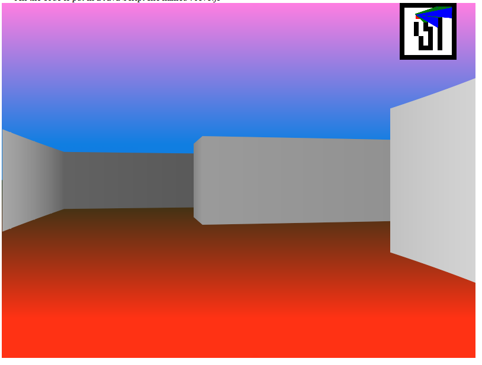
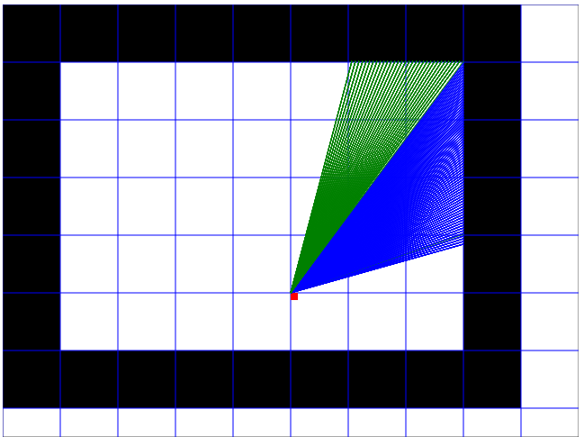
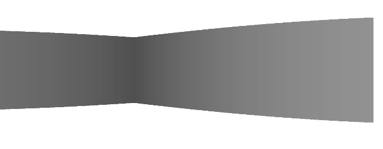

About this tutorial
Author : Romain Raveaux
Web Site : http://romain.raveaux.free.fr
This is a ray casting tutorial.
The goal is to understand what is "ray casting" along with some piece of code (HTM5/Java Script).
Latter, we want to use this technique to render a work site or a school.
This tutorial serves as a basis for student projects.
The origin of this tutorial
Many ideas and illustrations come from this web site.
https://permadi.com/1996/05/ray-casting-tutorial-table-of-contents/
We thank the author of this tutorial.
At the end you should get something like that :
The final step --> step12.html
My code on git lab
Why this tutorial ?
My tutorial differs from the original one by different aspects :
- Explanations come with pieces of codes to illustrate the explained notions
- The code is decomposed into many readable functions. The code is less optimized than the original one but we hope it is more readable.
- The code is scalable to different screen resolutions by changing the Canvas size.
What is ray casting
Ray-casting is a pseudo 3-dimensional rendering technique that are very popular in game development arena in the 90s.
Although ray-casting has been supplanted by newer and more powerful techniques (and hardware!), the reader can hopefully still benefit from the technique.
Ray-casting sensation began with the release of a game, Wolfenstein 3D (iD Software), in 1992. In Wolfenstein 3D, the player is placed on a three dimensional maze-like environment, where he/she must find an exit while battling multiple opponents. Wolfenstein 3D becomes an instant classic for its fast and smooth animation. What enables this kind of animation is an innovative approach to three dimensional rendering known as “ray-casting.” Wolfenstein 3D was developed and created by Id Software. Henceforth, Id’s programmer, John Carmack, might well be the person who initiates the ray-casting sensation.

WHAT IS RAY-CASTING?
Ray-casting is a technique that transform a limited form of data (a very simplified map or floor plan) into a 3D projection by tracing rays from the view point into the viewing volume.


More details are given in the original tutorial :
https://permadi.com/1996/05/ray-casting-tutorial-table-of-contents/
What's on this tutorial:
An introduction to the HTML 5
Wall finding
Fishbowl / distortion corrections
Simple flat wall shading
Rendering of simple (static) ground and sky
Movement handling
Step 1 : CREATING A WORLD
It starts with a canvas
The width is 320 pixels.
The height is 200 pixels.
Let us create the canvas :
< canvas id="gameCanvas" width="320" height="200">
</canvas>
Let us get a variable of type "Canvas" to use it.
<script>
var canvas = document.getElementById("gameCanvas");
var gameWindow=new GameWindow(canvas);
gameWindow.start();
</script>
GameWindow is our class the code will be located.
The constructor of the class retrieve basic information:
function GameWindow(canvas) {
// create the main canvas
this.width = canvas.width;
this.height = canvas.height;
this.canvas = canvas;
this.context = this.canvas.getContext( '2d' );
this.animationFrameID;
}
We need a function to tranform RGB color vector to CSS hexadecimal color
rgbToHexColor : function(red, green, blue)
{
var result="#"+
red.toString(16).toLocaleString('en-US', {minimumIntegerDigits: 2, useGrouping:false})+""+
green.toString(16).toLocaleString('en-US', {minimumIntegerDigits: 2, useGrouping:false})+""+
blue.toString(16).toLocaleString('en-US', {minimumIntegerDigits: 2, useGrouping:false});
return result;
},
We need to define basic functions to draw lines on the canvas.
drawLine: function(startX, startY, endX, endY, cssColor)
{
this.context.strokeStyle = cssColor;
this.context.beginPath();
this.context.moveTo(startX, startY);
this.context.lineTo(endX, endY);
this.context.stroke();
},
Let us draw a vertical line at the middle (Colum 300)
x=this.width/2
this.drawLine(x,0,x,this.height,cssColor);
Let us draw the borders of the canvas:
//Left border
this.drawLine(0,0,0,this.height,cssColor);
//Right border
this.drawLine(this.width,0,this.width,this.height,cssColor);
//Up border
this.drawLine(0,0,this.width,0,cssColor);
//Down border
this.drawLine(0,this.height,this.width,this.height,cssColor);
Next: Step 2 DEFINING PROJECTION ATTRIBUTES
step2.html